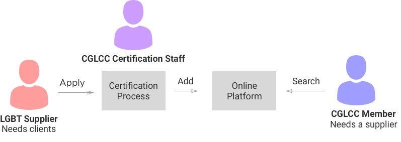
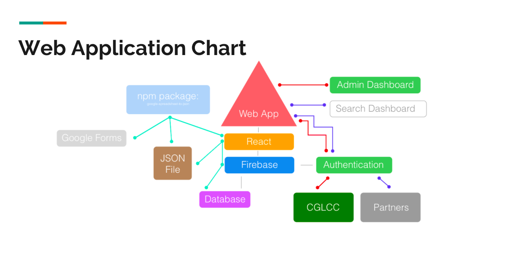

Case Study
A 9 hour hackathon challenge to help the Canadian Gay and Lesbian Chamber of Commerce (CGLCC) in their work to help LGBT entrepreneurs/businesses succeed and encourage diversity in the workplace.
Methodology
- Modelling the problem
- Scoping
- Ideation
- Design
- Pitch
The Team
- Front End Developer/Product Owner
- Strategy
- UX Designer (me)
- Entrpreneur
The Problem: Helping Businesses to Find LGBT Suppliers
Using a combination of briefing documents and question time with stakeholders from the organization. We modelled what we knew of the problem space.

There were three main processes that we identified:
- Application (Suppliers)
- Certification process (CGLCC)
- Looking for a supplier (CGLCC Members)
The moment we were solving for was the third. Currently, all the suppliers are kept in an Excel sheet (updated quarterly), which is then emailed to people making inquiries.
Pain Points
- Outdated info
- Manual work
- Excel sheet not a scalable/user friendly format for browsing businesses
- Difficult to find specialised services
- Time lag for extra back and forth to get the list
- Security
Getting On The Same Page
Our group had a lot of ideas that spanned many different parts of the process/organization, but this threatened scope creep. There was also the temptation to jump straight into solutioning and detailed design. The developer and I worked together to get the group to adopt an MVP approach, with a prioritised list of user stories (including must haves and nice to haves).
Solution I

Creating a platform that allowed:
- CGLCC members to pay for/renew their membership and view/search the directory of suppliers
- CGLCC staff to add suppliers to the directory and administer the platform
- Suppliers to reapply for their listing and edit their information.
The application form was also to be changed to include tax codes for the industries of the businesses to assist with mapping to human-readable keywords/search terms.
This solved the problem because:
- Information would be up to date
- It would be more secure
- More opportunity to make it searchable by human readable terms and find specific services
- More user friendly format than plain text data in a spreadsheet
- More instantaneous so people don't satisfice with a (possibly non-LGBT) supplier found via other means
Pragmatism
The vision was ambitious because we didn't necessarily have to prototype everything during the hackathon. However, one of the mentors advised us that we should think about feasibility and whether there are any off-the-shelf products/components that we could use.
Solution II

We toned down our solution. The only custom part of it would be the CGLCC Member side (looking for a supplier). The suppliers would be added via a Google Form, linked to a Google Sheets, linked to FireBase (easier to set up for non-technical people).
The Directory
I was in charge of prototyping the directory, but first I mapped out the user journey using the scenario of someone finding a caterer for their company's meetup in three weeks. Luckily, I had done user research for a services marketplace in a previous job, so my assumptions in this exercise were more informed than they otherwise would have been. The journey mapping influenced the design of the portal in the following ways:
- The content: What are the factors they are using the evaluate businesses and make decisions? (Refer to journey map)
- System qualities: We are only one of several avenues that the user would be using (e.g. Google, word of mouth, etc.) so we needed to be open and conducive to a broader search/comparison
- Functionality: The shortlist feature came out of the natural funnelling process that users would be doing to narrow down who to choose
Result
We were selected by the CGLCC team as one of the finalists for how deep we dug into the problem, particularly with the user experience, and the simplicity that we brought to our solution.


{kind=link}